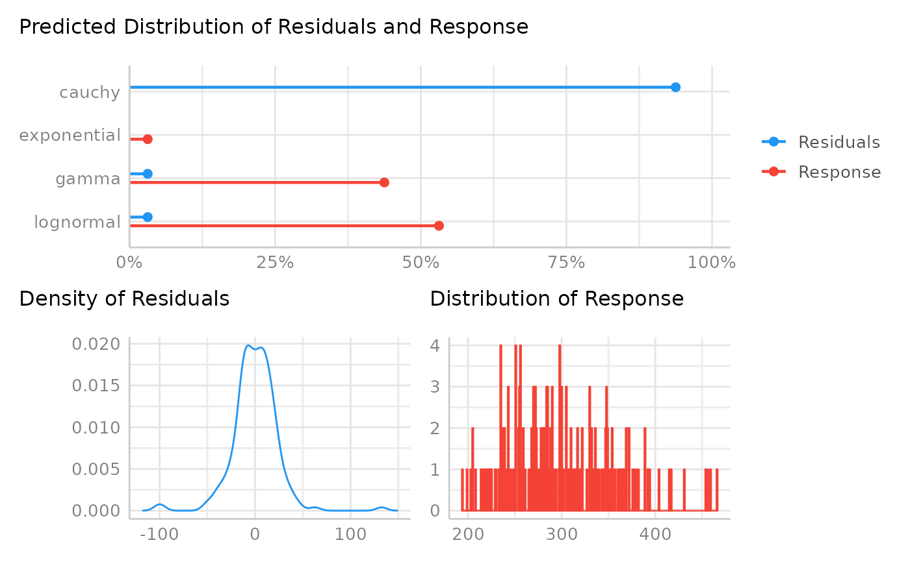

Classify the distribution of a model-family using machine learning
Source:R/check_distribution.R
check_distribution.RdChoosing the right distributional family for regression models is essential to get more accurate estimates and standard errors. This function may help to check a models' distributional family and see if the model-family probably should be reconsidered. Since it is difficult to exactly predict the correct model family, consider this function as somewhat experimental.
Arguments
- model
Typically, a model (that should response to
residuals()). May also be a numeric vector.
Details
This function uses an internal random forest model to classify the
distribution from a model-family. Currently, following distributions are
trained (i.e. results of check_distribution() may be one of the
following): "bernoulli", "beta", "beta-binomial", "binomial",
"cauchy", "chi", "exponential", "F", "gamma", "half-cauchy",
"inverse-gamma", "lognormal", "normal", "negative binomial",
"negative binomial (zero-inflated)", "pareto", "poisson",
"poisson (zero-inflated)", "tweedie", "uniform" and "weibull".
Note the similarity between certain distributions according to shape, skewness,
etc. Thus, the predicted distribution may not be perfectly representing the
distributional family of the underlying fitted model, or the response value.
There is a plot() method, which shows the probabilities of all predicted
distributions, however, only if the probability is greater than zero.
Note
This function is somewhat experimental and might be improved in future
releases. The final decision on the model-family should also be based on
theoretical aspects and other information about the data and the model.
There is also a
plot()-method
implemented in the
see-package.
Examples
data(sleepstudy, package = "lme4")
model <<- lme4::lmer(Reaction ~ Days + (Days | Subject), sleepstudy)
check_distribution(model)
#> # Distribution of Model Family
#>
#> Predicted Distribution of Residuals
#>
#> Distribution Probability
#> cauchy 91%
#> gamma 6%
#> neg. binomial (zero-infl.) 3%
#>
#> Predicted Distribution of Response
#>
#> Distribution Probability
#> lognormal 66%
#> gamma 34%
plot(check_distribution(model))
